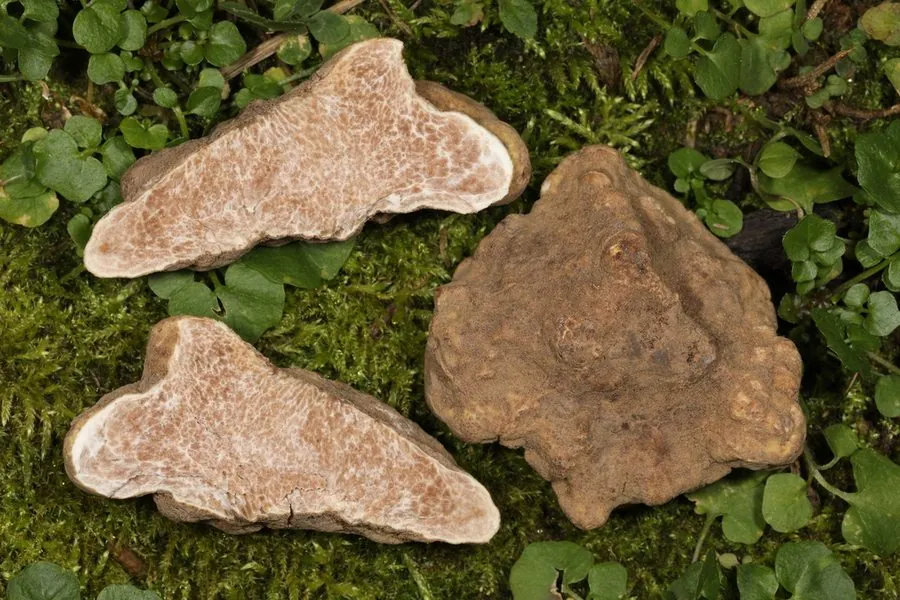

真菌 · 真菌界
白松露 Tuber magnatum

产于意大利等地的浅色块菌，香气浓郁复杂，产量稀少、价格远高于黑松露，被誉为“餐桌上的白钻石”。
- 分类
- 门子囊菌门纲盘菌纲目盘菌目科块菌科属块菌属
- 栖息环境
- 石灰岩土壤的橡树、榛树林地，子实体生于地下 5–20 cm 深处
- 地理分布
- 意大利北部、克罗地亚和巴尔干半岛，中国无自然分布
- 保护级别
- 暂无评估（IUCN 未评估，野生资源稀少）
物种志
白松露是子囊菌门盘菌目的外生菌根真菌，子实体生于地下，呈不规则的块状或球形，直径 2–8 cm，表面光滑，呈淡黄白色至黄褐色，带有少量浅色斑块；内部产孢组织为浅黄褐色，密布白色的迷宫状纹路。成熟后香气浓郁，带有蒜香、蜂蜜、干草和麝香混合的气味。
白松露与橡树、榛树、柳树等树木形成外生菌根，生于石灰岩土壤的林地中，主要分布在意大利北部、克罗地亚和巴尔干半岛，中国不产真正的白松露。它对生长环境极为挑剔，至今无法人工栽培，采集靠训练过的狗闻香寻找，每年秋季至初冬是采收季。白松露香气浓郁复杂，价格远高于黑松露，被誉为“餐桌上的白钻石”。由于产量稀少、受气候变化影响，野生白松露价格屡创新高。
形态与习性
- 子实体不规则块状，生于地下，直径 2–8 cm
- 表面光滑，淡黄白色至黄褐色
- 内部浅黄褐色，密布白色迷宫状纹路
- 香气蒜香、蜂蜜、干草与麝香的复合气味
- 共生与橡树、榛树等形成外生菌根
- 采收期秋季至初冬，靠犬只寻香采集
- 经济价值产量稀少，价格远高于黑松露
趣味知识
- 白松露至今无法人工栽培，只能靠训练过的狗在林地里闻香寻找。
- 它的香气复杂，带有蒜香、蜂蜜、干草和麝香的气味。
- 白松露主要产自意大利北部，产量稀少，价格远高于黑松露。
- 采摘后的白松露香气消散很快，通常要尽快食用。